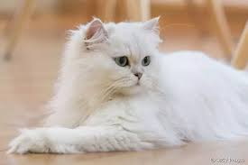

Personalidade
Eles são gatos carinhosos que apreciam um bom colo e, quando menos você menos esperar, o bichano vai estar se aninhando nas suas pernas sem você precisar forçá-lo a nada. Os Persas também são animais também muito amigáveis, no geral, e se dão bem com qualquer pessoa e/ou família. No entanto, a socialização não deve ser deixada de lado com os gatos Persas filhotes.
Saúde
O focinho achatado é uma das características mais marcantes da raça, por isso é normal o gato Persa ter dificuldades respiratórias.
Nas épocas com as temperaturas mais elevadas, é importante manter o animal em locais arejados e sempre oferecer água fresca. Como
gostam de beber água corrente, um bebedouro tipo fonte é um ótimo investimento para incentivar seu gato Persa a se hidratar e evitar
problemas renais.
Outro problema que o focinho achatado pode causar é a secreção ocular, portanto, é recomendado higienizar os olhos do gato persa
diariamente. Com a ajuda de algodão e um pouquinho de água é o suficiente.
Problemas de pele como micose, fungos, infecções e seborreia oleosa também são comuns na raça. Por esse motivo, pode ser que o veterinário
responsável pelo seu gato indique o uso de ração para gatos sensíveis.
A saúde do gato Persa é resistente, mas pode ser acometida por vários probleminhas adquiridos ao longo da vida ou de origem genética. Além
da dificuldade respiratória derivada da braquicefalia, alguns problemas dentários - como o acúmulo de tártaro e má-oclusão - também são preocupações
frequentes nos tutores. Outras condições que merecem igual atenção são:
- Cardiomiopatia hipertrófica felina;
- Displasia de quadril;
- Dermatites em gatos;
- Problemas oculares (como glaucoma em gatos e epífora felina);
- Doenças renais.
Características Físicas
Com o seu corpo compacto e robusto que lembra o de um urso de pelúcia, o gato Chartreux é um forte candidato a fazer qualquer um se apaixonar. Apesar de ser considerado de porte médio, o peso e altura da raça podem variar
bastante e surpreender vários tutores. Diferentemente de animais menores, como o gato Singapura, tamanho do Chartreux pode pesar até 7 kg no caso dos machos. Em contrapartida, as fêmeas têm um porte médio para pequeno e não ultrapassam a marca de 4 kg.
Além disso, outra característica física que não passa despercebida no Chartreux é a cor da pelagem. Com pelos densos, duplos e sempre na cor cinza, esses felinos são bem peludinhos e têm uma facilidade maior em isolar o frio e a umidade do corpo.
Justamente por esse motivo, quem decide comprar gato Chartreux deve ter em mente que a pelagem do animal requer alguns cuidados especiais. Os olhos da raça também chamam muita atenção: esse é um gato cinza.